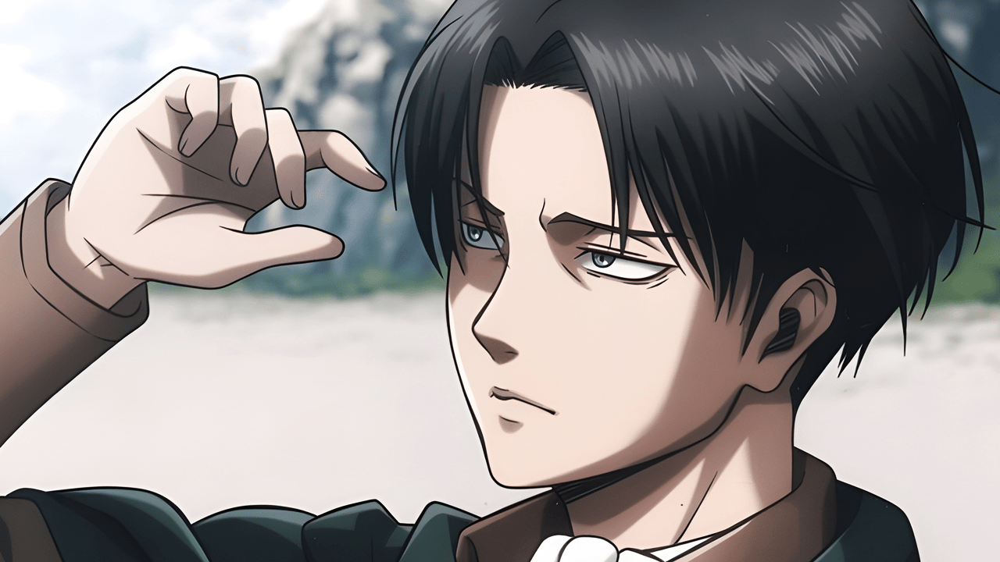

SHINGEKI NO KYOJIN
LEVI AKERMAN

Levi es una persona seria, de carácter firme e ideas claras. Siente un gran respeto por la disciplina
y es un conscripto con un enorme potencial para ser líder, pues sus órdenes siempre son claras y precisas, sin que nadie
se atreva a cuestionar su autoridad. Su seriedad y frialdad transmite ese tipo de respeto, sobre todo este primer factor,
siendo alguien de pocas palabras y que muy rara vez expresa sus sentimientos. Sabe perfectamente la responsabilidad que
conlleva manejar a un grupo de soldados, y que según cómo sean sus órdenes puede llevar a esos
soldados a una muerte segura.
Color de ojos: Grises azulados